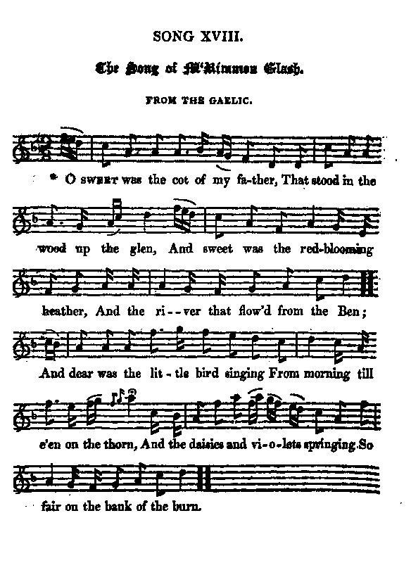

The Song of McRimmon Glash
Chant de McRimmon Glash
Transcrit par James Hogg du gaélique
Tune - Mélodie"The Song of McRimmon Glash"
from Hogg's "Jacobite Relics" 2nd Series Appendix "Jacobites Songs N°18
Sequenced by Christian Souchon

|
To the tune:
Hogg gives no particulars of this wonderful tune. (See also Cha till MacCruimein ) |
A propos de la mélodie:
Hogg ne donne aucune précision à propos de cette superbe mélodie. (Cf. aussi Cha till MacCruimein ) |

|
THE SONG OF McRIMMON GLASH
From the Gaelic (*) 1. O sweet was the cot of my father That stood in the wood up the glen, And sweet was the red blooming heather And the river that flow'd from the Ben; And dear was the little bird singing From morning till e'en on the thorn, And the daisies and violets springing So fair on the bank of the burn. 2. I rose at the dawn of the morning, And ranged through the woods at my will; And often till evening's returning I loitered my time on the hill. Well known was each dell in the wild wood, Each flower spot, and green grassy lea ; 0 sweet were the days of my childhood, And dear the remembrance to me! 3. But sorrow came sudden and early, Such joys I may ne'er know again, I followed the gallant Prince Charlie, To fight for his rights 'and my ain. No home has he now to protect him From the bitterest tempest that blows; No friend, save his God to direct him, While watched and surrounded by foes. 4. I have stood to the last with the heroes, That thought Scotland's rights to have saved ; No danger that threatened could fear us, But we fell 'neath the blast that we braved. My chief wanders lone and forsaken, 'Mong the hills where his stay wont to be ; His clansmen are slaughtered or taken, For, like him, they all fought to be free. 5. The sons of the mighty have perished, And freedom with them fled away; The hopes that so long we have cherished, Have left us forever and aye. As we hide on the brae 'mong the braken, We hear our hame crash as they burn. O God, when shall vengeance awaken, And the day of our glory return. TG (*) "From the Gaelic": click ici Source: "The Jacobite Relics of Scotland, being the Songs, Airs and Legends of the Adherents to the House of Stuart" collected by James Hogg, volume II published in Edinburgh by William Blackwood in 1821. |
LE CHANT DE MCRIMMON GLASH
Traduit du Gaélique (*) 1. La ferme de mes aïeux parmi les branches J'aimais à la voir, en haut du glen Cernée de bruyères bleues où s'épanche Le ruisseau qui descend du Ben Combien j'aimais, sur la branche de l'aubépine, Ouïr le chant des oiseaux Qui module et s'affine ou bien que l'on devine Dans le gazouillis du ruisseau. 2. Je me suis levé souvent avec l'aurore Pour courir les bois au gré du vent. Parfois venait le couchant même encore Me surprendre sur le versant. Je parcourais prés fleuris et vertes prairies, Et les ravins du bois, Et conserve à jamais la mémoire éblouie D'une enfance qui vit en moi. 3. Puis vint le temps du chagrin à l'improviste. Ces simples plaisirs, c'était hier. Lorsque j'ai suivi Charlie, notre Prince De lutter pour lui, j'étais fier. Mais il n'a plus d'abris où reposer sa tête Ni contre l'aquilon; Hormis Dieu point de guide, parmi les tempêtes; Epié, traqué par les félons. 4. Moi, j'ai vécu jusqu'au bout cette aventure Pour maintenir l'Ecosse en ses droits; Des menaces, du danger n'ayant cure Nous tombâmes, un contre trois. Mon chef doit se cacher, seul, afin de survivre, Errant près de son logis. Ceux de son clan qui luttèrent pour être libres Sont massacrés, quand ils sont pris. 5. Tous ces rejetons des puissants qui périrent Virent s'envoler leur liberté. Les espérances qu'un temps ils nourrirent Les abandonnent à jamais. Nous cachant alentour, nous voyons nos chaumières S'écrouler dans le feu. O puissent ceux que la soif de vengeance altère Voir revenir leurs jours glorieux! (Merci au contributeur!) (*) "Traduit du gaélique": cliquer ici (Trad. Christian Souchon (c) 2010) |